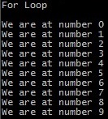
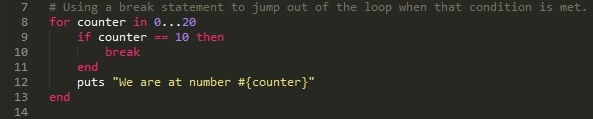
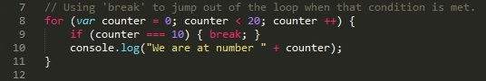
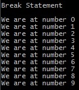
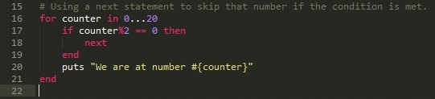
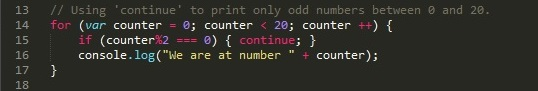

Loops in Ruby vs. Loops in JavaScript10-20-2015
Let's compare for loops in Ruby and JavaScript.
To review, in Ruby, a for loop's counter variable does not need to be declared before it is used in the for loop. This for loop counts from 0 to 10 (not including 10 - if we wanted to include the 10 we'd use 2 dots instead of 3 between the 0 and 10).
In JavaScript, a for loop looks a little bit different. In the first line of the loop, we have to declare a variable counter, set it's initial value, and then set the condition for which the loop should run as long as that condition is 'true'. Lastly, we establish how the counter value should increment or decrement.
Both the Ruby code and the JavaScript code will give you the output:
Notice that since we explictly declare everything in the JavaScript code, we also have more flexibility with that for loop. We can easily change it to increment by 2 or 3 (by replacing counter ++ with counter += 2 or counter += 3). While a Ruby for loop can be modified (with a .step method) to increment by 2 or 3, it is not best practices to do so with a for loop (best practices would be to use the .step method by itself).
In both Ruby and JavaScript, there are break and next(in Ruby) or continue (in JavaScript) features. break in both Ruby and JavaScript stops the loop from continuing if a certain condition is met.
A 'break' statement in a for loop in Ruby
A 'break' statement in a for loop in JavaScript
As we can see in both of the above pictures, a 'break' statement requires some kind of if statement. If that conditional statement becomes 'true' then the loop stops.
Both the Ruby code and the JavaScript code will give us the output:
The continue or next statement allow users to skip over certain iterations. For example if you wanted to print only mulitples of 5 or only odd numbers, you can.
A 'next' statement in a for loop in Ruby
A 'continue' statement in a for loop in JavaScript
As we can see from the above images, the next and continue statements are called with similar syntax to the break statement. There's an if statment and when that condition is met, the loop doesn't do the action (in our case printing to the console) for that counter number. So the above code snippets, won't print when the counter is divisble by 2. Which means that it will only print odd numbers.
Both the Ruby code and the JavaScript code will give us the output:

As we can see from the above examples, the general for loop logic is the same across both languages. There is a counter value. The loop runs as long as that counter value makes a conditional statement true. The only real difference is in the syntax. JavaScript requires more explicit syntax that explicitly declare the variables used and explicitly ends the statements with a semicolon. At the end of the loop Ruby requires an end. In JavaScript, the loop 'actions' are enclosed with the curly braces ({}).